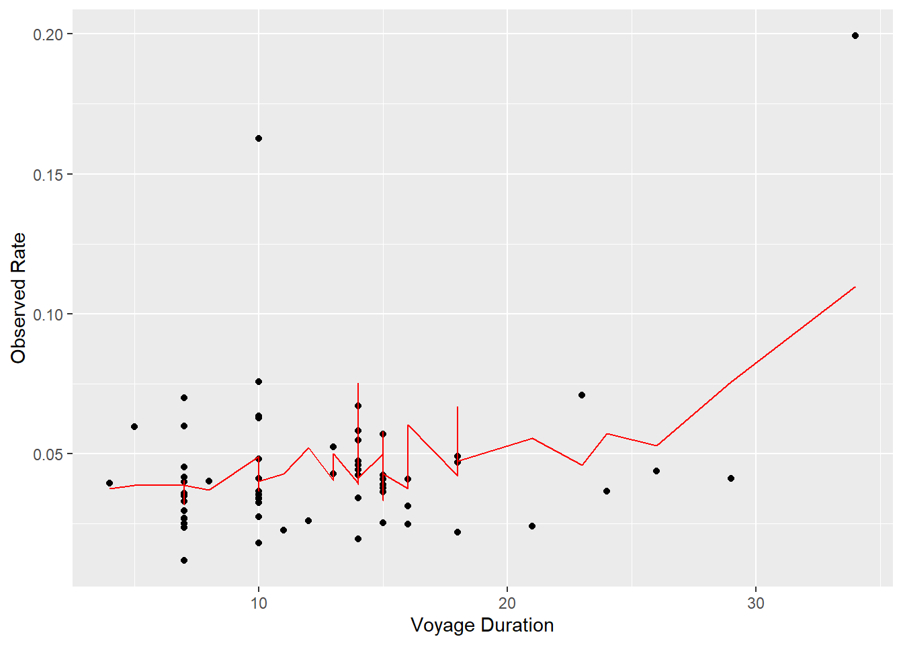

Binomial Regression
The glm function in the stats R package is a simple yet effective tool for this next model.
Using the following framework for our model:
\[\begin{equation} {Data \ Model}: [z=y] \newline {Process \ Model}: y_{ij} \sim Binom(n_i,\phi_j) \newline {Parameter \ Model}: [\phi_j \ | \ \phi_s,\phi_t] \newline \phi_s = MVN(0,\epsilon) \end{equation}\]We will be using the logit function
\[\begin{equation} 1 \over e^{\beta_0 + \beta_1*X + \phi_s + \phi_t} \end{equation}\]as our model for predicted rate of infection.
We’ll use our intercept of size but as a category this time, then add in our voyage duration, latitude, and longitude. We set the family="quasibinomial" since it creates the same effect as family="binomial", but avoids a repetitive error code.
m2 <- glm(infection ~ size.cat + total_days + cruisedata.df$Start_lat + cruisedata.df$Start_long, data=cruisedata.df, family="quasibinomial")
summary(m2)##
## Call:
## glm(formula = infection ~ size.cat + total_days + cruisedata.df$Start_lat +
## cruisedata.df$Start_long, family = "quasibinomial", data = cruisedata.df)
##
## Coefficients:
## Estimate Std. Error t value Pr(>|t|)
## (Intercept) -3.354517 0.448056 -7.487 6.01e-10 ***
## size.cat2 -0.066468 0.384998 -0.173 0.8636
## size.cat3 -0.138738 0.374774 -0.370 0.7127
## size.cat4 -0.148188 0.368990 -0.402 0.6895
## size.cat5 0.070229 0.361981 0.194 0.8469
## total_days 0.032019 0.012450 2.572 0.0129 *
## cruisedata.df$Start_lat 0.004797 0.003678 1.304 0.1976
## cruisedata.df$Start_long 0.002612 0.001564 1.670 0.1006
## ---
## Signif. codes: 0 '***' 0.001 '**' 0.01 '*' 0.05 '.' 0.1 ' ' 1
##
## (Dispersion parameter for quasibinomial family taken to be 0.01363758)
##
## Null deviance: 0.84225 on 62 degrees of freedom
## Residual deviance: 0.64622 on 55 degrees of freedom
## AIC: NA
##
## Number of Fisher Scoring iterations: 6Once again, a data frame for our prediction is built, with predicted rate, size categories, observed rate of infection, voyage duration, latitude, and longitude. Then we fill the empty prediction column with expected rates of infection.
df.predm2 <- data.frame(yhat_rate = NA,
size.cat = cruisedata.df$size.cat,
actual_rate = cruisedata.df$infection,
total_days = cruisedata.df$total_days,
lat = cruisedata.df$Start_lat,
long = cruisedata.df$Start_long)
df.predm2$yhat_rate <- predict(m2,newdata=df.predm2)
df.predm2$yhat_rate <- 1 / (1 + exp(-df.predm2$yhat_rate))
head(df.predm2)## yhat_rate size.cat actual_rate total_days lat long
## 1 0.07566357 5 0.04125690 29 days 33.7405 -118.2786
## 2 0.03889552 5 0.03504727 7 days 33.7405 -118.2786
## 3 0.03590919 4 0.03586066 7 days 39.2876 -76.6108
## 4 0.03703431 4 0.04017857 8 days 39.2876 -76.6108
## 5 0.05298255 3 0.04384384 26 days -22.8955 -43.1822
## 6 0.03939088 3 0.06709957 14 days 32.7157 -117.1611Plotting this the way we did before does not achieve much due to how many variables we’re working with. The plot below details that concept, in my opinion, very well.
ggplot(data = df.predm2, aes(x=as.numeric(total_days), y=actual_rate)) +
labs(x="Voyage Duration", y="Observed Rate") +
geom_point() +
geom_line(aes(y=yhat_rate), color='red')